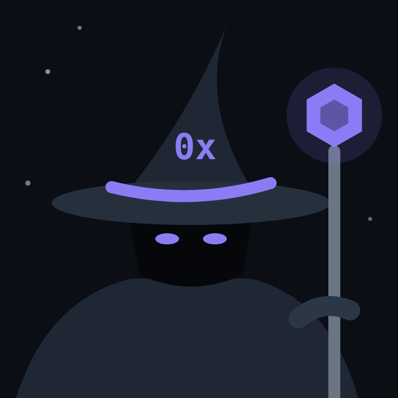

What broke, how much it cost, and the one lesson a smart contract auditor takes from it. Written by a beginner, for beginners. Amounts are approximate, in USD at the time of the attack.

The contract sent ETH before updating the balance, so the attacker's contract called withdraw again and again inside the same transaction.
Lesson: update state first, send money last (checks-effects-interactions).
A shared library contract was never initialized. Someone called init, became its owner, then destroyed it. Every wallet that depended on it was frozen forever.
Lesson: every initializer must be protected, including in library and implementation contracts.
A cross-chain message could call a privileged function and replace the "keeper" that approves withdrawals. The attacker made himself keeper. (Funds were later returned.)
Lesson: ask "who can call this?" for every function that changes who is in charge.
The bridge on Solana trusted a fake "signatures already verified" account, so the attacker minted 120,000 wrapped ETH backed by nothing.
Lesson: never trust an input that claims a check already happened. Verify it yourself.
Withdrawals needed 5 of 9 validator signatures. Attackers got 5 private keys, partly through social engineering, and signed the withdrawals themselves.
Lesson: perfect code still fails if too few people hold the keys.
Voting power was counted at the moment of the vote. The attacker borrowed a billion dollars for one transaction, voted his own proposal through, and paid the loan back.
Lesson: anything measured "right now" can be borrowed for one block. Use delays and snapshots.
An upgrade set the trusted root to zero, which made every message count as valid. Hundreds of copycats drained it by copy-pasting the first attack.
Lesson: audit the upgrade and its config values, not just the code.
The attacker pumped the price of a thin token, used the inflated position as collateral, and borrowed everything else in the protocol.
Lesson: a price is only as safe as the market behind it. Thin markets are easy to move.
A new "donate to reserves" function let users reduce their own collateral without checking if the position was still solvent. (Funds were later returned.)
Lesson: every new function must keep the protocol's core rules (invariants) true.
The code had a reentrancy lock, but some versions of the Vyper compiler built it wrong. The lock silently did nothing.
Lesson: your tools are part of the attack surface, compiler included.
Order of operations
Who moves money, and when? (DAO, Curve)
Who is allowed?
Access control and keys. (Parity, Poly, Ronin)
What do we trust?
Inputs, prices, messages. (Wormhole, Mango, Nomad)
What must always be true?
Invariants and timing. (Euler, Beanstalk)
I'm learning to find these before they happen. One email a week with what I learned and one new hack explained. Reply anytime, I read everything. Eduard